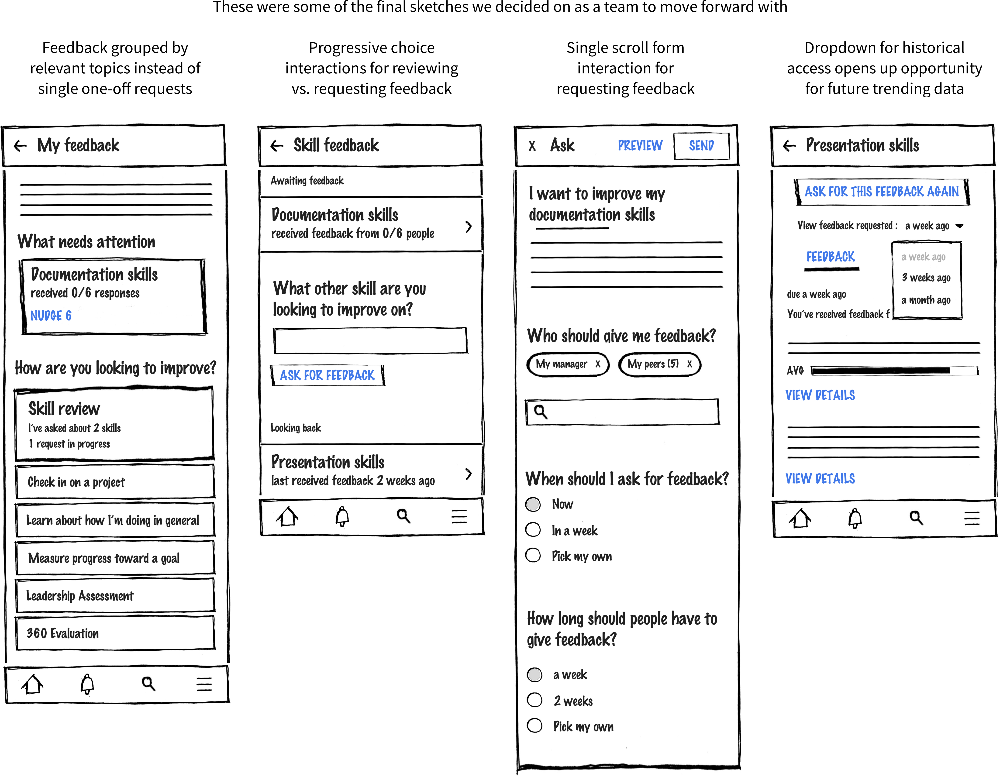
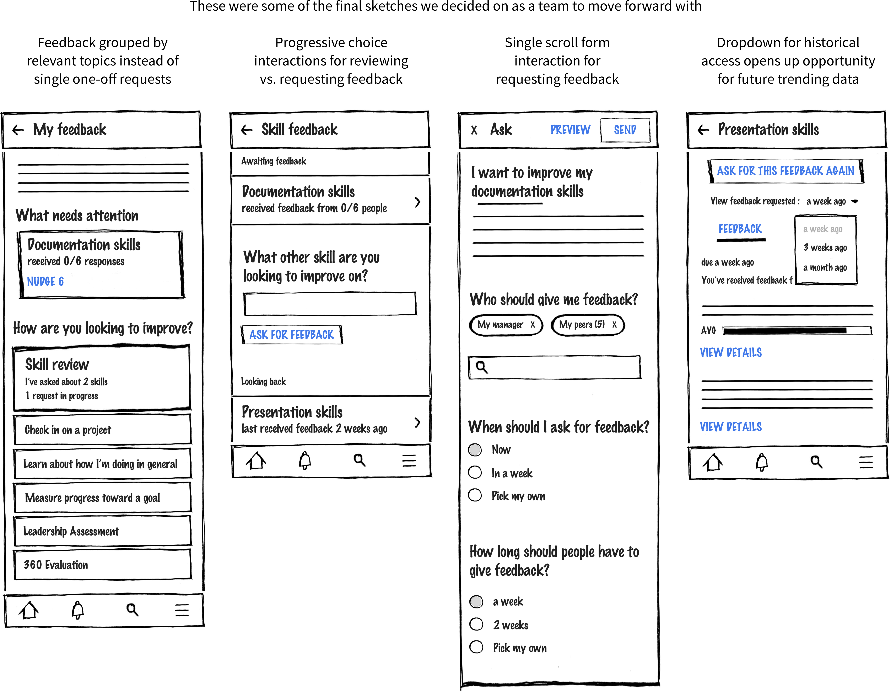

A competitor review showed that there were common patterns using progressive disclosure for mobile feedback experiences

This project reimagined performance processes and feedback as a mobile experience. Our team took data from our web-based feedback tool and redesigned the experience to better fit customers in healthcare, manufacturing, and sales, whose workforces that don't have regular access to a computer.
The annual performance review is not enough to retain employees and keep them engaged. Continuous feedback is an HR process that can improve employee engagement at an organization while supplementing the annual review process as well. Our team created a desktop experience for continuous feedback, but many organizations have a mobilized workforce without consistent access to a computer that would miss out on a desktop-only solution.

 
